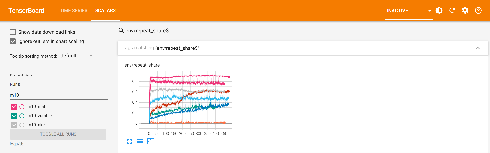
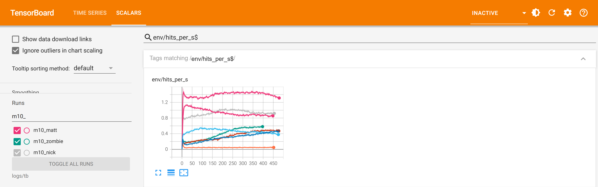
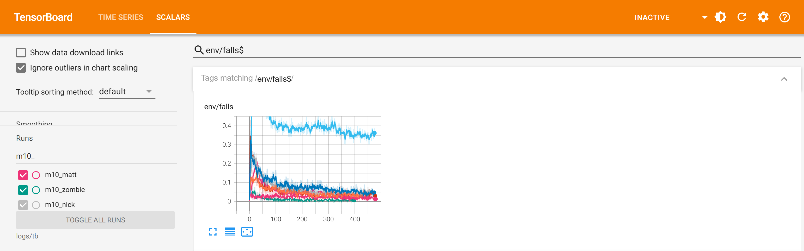

Overnight training: m10, all eight boxers
2026-10-16 23:01 to 2026-10-17 06:59 · v2 bodies · the game's punch rules on · exams in C MuJoCo 3.5.0, 60 trials, 12 rounds
Exam: shipped brain against m10, lines passed of six
| Boxer | Shipped | m10 | Gained | Still failing |
|---|---|---|---|---|
| Matt | 4 | 5 | footing (1.11 → 0.00 falls/min) | carrying on 51/57 (mark 90%) |
| Zombie | 3 | 5 | footing (8.11 → 0.00), carrying on (36/52 → 52/52) | attack 0.72/s at 3.6 m/s (mark 4.0 m/s) |
| Nick | 3 | 5 | footing (8.11 → 0.11), carrying on | attack 0.79/s |
| Trump | 3 | 5 | footing (1.22 → 0.00), carrying on | attack 0.44/s |
| Sokol | 4 | 5 | carrying on (53/59 → 58/60) | footing 1.56/min |
| Kim | 3 | 4 | carrying on | footing 2.0/min, attack 0.40/s |
| Grandma | 2 | 3 | attack (0.19 → 0.64/s) | footing 7.0/min, getting up 0/60 |
| Grandpa | 2 | 2 | none (falls 4.8 → 2.7/min, not enough) | footing, attack 0.02/s, getting up 24/60 |
Shipped is examined against the other shipped brains, m10 against the other m10 brains, both under the same rules
(logs/exam_punch_baseline.json, logs/exam_m10_NAME.json).
The three charts that matter
1. Repeat share: how often the next punch is the same as the last

Toddler They kept throwing the same punch over and over, and got even more like that.
Child We tried to make a repeated punch worth less so they would mix it up. The line was meant to go down; for every boxer it went up (Matt from 0.66 to 0.76, Sokol 0.76 to 0.89, Trump 0.17 to 0.60).
Adult With a repeat decay of 0.7 and a combination bonus of 0.1, landing pay still dominates: the boxers that learned to land more learned it with their one best punch. Combinations stayed at about 0.001 a second. Next try: decay 0.4, combination 0.3, and the head weighted up, since Matt and Sokol still land 0-1% to the head.
2. Punches landed a second

Toddler Most of them hit more often by the end.
Child Zombie went from 0.20 to 0.57 a second, Grandma 0.15 to 0.46, Trump 0.15 to 0.48, Nick 0.72 to 0.92. Matt and Sokol, already the busiest, stayed about where they were. Grandpa (the flat line at the bottom) still barely punches.
Adult The attack line wants a rate at 4 m/s or more against the whole field; four boxers are still under it. Grandpa blocks 0.66 a second and lands 0.02: the same lesson as his D8 run. The punch rules (push, stagger, lasting damage) make the field harder to hit than the old training was.
3. Falls an episode

Toddler They stopped falling over.
Child Seven of the eight fell far less by the end: Grandma from 0.23 to 0.05, Trump 0.25 to 0.04, Nick 0.19 to 0.05. The line that stays high is Kim (0.43 to 0.36).
Adult This is the night's real gain, and it is what the exam's footing and carrying-on lines measured: footing passes for Matt, Zombie, Nick and Trump, and carrying on for five, after the hand-over share went from 0.3 to 0.5 (half the episodes start from the moment a get-up hands over). Kim's falls are her own: against Grandma and Grandpa, who block, she overreaches.
Against earlier runs
Better: Matt's m9 and rc1 both failed carrying on at 52/58; m10 is 51/57 (the same) but now passes footing without losing attack. Zombie's m1 was rejected and sf1 failed attack at 0.20/s; m10 lands 0.72/s and passes five lines. Trump's D8 exam failed attack and guard; m10 passes guard.
Worse or flat: the punch mix (above). Grandpa is flat. Grandma's get-up is still 0 of 60: a match round cannot fix a get-up policy that never stands unaided under the speed limit.
What went wrong in the night
The eight exams after each run stopped in ten seconds: the exam book (logs/book_punch.json) named the m9 runs, which were staged
but never trained. A new book (logs/book_m10.json) and the eight exams ran again in the morning (05:51-06:59). A UI capture held
play mode for about ten minutes at the start of Matt's run (8k samples a second, then 19k).
To promote m10
Recommended for the seven that gained lines (Grandpa is no better). It needs the editor and, per boxer:
obs_stateinAssets/Boxers/NAME/config.json(these brains read their reserve and daze as inputs).- For Matt, Nick and Grandma, trained under the speed limit: the speed limit on in the game too, with their retrained footwork (the D8 rule).
MjRetrofit.PromoteBoxing(name, "m10_NAME", get-up run), then MjGate and MjParity tests, then the CPU Elo again.